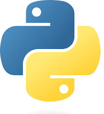
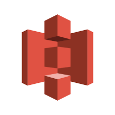
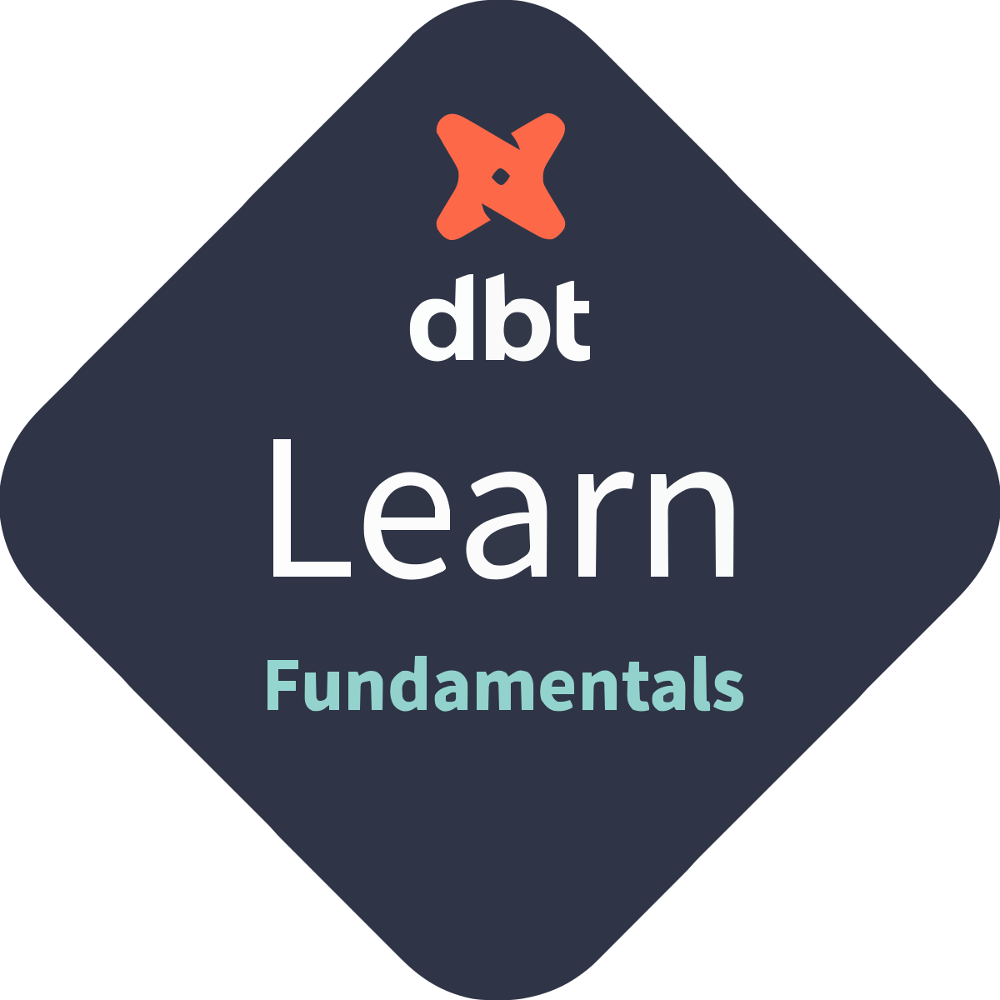
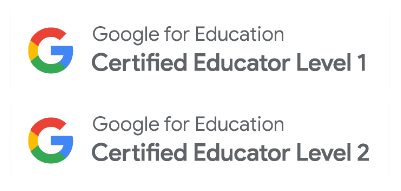
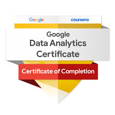

✨ Explore Sandbox Preview
Welcome to the gamified side of my portfolio! Experimental features in this sandbox.
👩💼About Me
Welcome! Thanks for stopping by. I’m a data and software engineer who builds clean systems, thoughtful automation, and tools that support collaboration and mission-driven work.
💡 Fun Fact About Me
🧑💻 Some Projects
@property({ type: String })
title = '';
render() {
return html`<h2>${this.title}</h2>`;
}
- 🧩 Components: Built and modified Lit-based web components integrated with CMS-driven content.
- 🎨 UI Engineering: Implemented responsive features using Tailwind CSS and Eleventy.
- 🚀 Launch Support: Supported production updates across multiple Google I/O 2026 launch phases.
key = f"backup_jobs/job_{job_id}_{today}.json"
s3.put_object(
Bucket=bucket_name,
Key=key,
Body=json_data
)- 🧰 Automation: Backed up job configurations and metadata for reliable recovery.
- ☁️ Cloud Storage: Stored validated job settings in AWS S3 as reusable JSON snapshots.
- 🚑 Recovery: Rebuilt Databricks jobs through REST API workflows after failure scenarios.
await fetch(url, {
method: 'DELETE',
headers: {
'X-Parse-Application-Id': APP_ID
}
});- 🛠 Automation: Dynamically generated Parse schemas and organically populated environments securely via Node.js scripts.
- 🧪 Agile TDD: Engineered targeted teardown scripts to instantly reset and sanitize datasets between robust test runs.
- 🔧 Tech Sandbox: JavaScript (ES Modules), Node.js, REST APIs, and Back4App configuration via Environment Variables.
const ratio = calculateContrast( textColor, backgroundColor ); return ratio >= 4.5;
- 🔄 Event Streaming: Engineered real-time publisher/subscriber data pipelines utilizing Google Pub/Sub and Python.
- 📦 Data Modeling: Orchestrated complete dbt staging, intermediate, and robust dimensional mart models mechanically.
- 🧪 Mock Generation: Synthesized highly realistic geographic freight-tracking datasets at scale using Faker and Geopy.
val w = Window.partitionBy("security_id")
.orderBy(col("priority").desc)
val ranked = df
.withColumn("row_num", row_number().over(w))
.filter(col("row_num") === 1)- ⚙️ Pipeline Overhaul: Re-architected continuous ingestion and data-matching frameworks actively utilizing Scala + SQL.
- 📊 Optimization: Drastically reduced duplicate entries applying aggressive window functions and data watermarks.
- 🧰 Technical Sandbox: Scala, SQL, Delta Tables, Databricks clusters, AWS S3, and JSON Streaming APIs.
class Educator {
constructor() {
this.focus = [
"Explain Systems",
"Teach",
"Structure Learning"
];
}
}- 📚 Core Experience: 12+ years professionally teaching Computer Science and higher-level mathematics.
- 🗣️ Systems Translation: Dedicatedly translating highly complex engineering architecture into widely understandable concepts.
- 🛤️ Developer Curriculum: Building structured technical learning paths and managing core stakeholder communications.
🧭 My Engineering Journey
✨ Click the nodes to uncover the full story.
📐 Math / MATLAB
🐍 Python
🖥️
Linux
🌐 HTML /
CSS / JS
🌐 Web Engineering
♿ Accessibility
🔍 Code Review
🏢 Enterprise Data Systems
🔗 APIs
⚙️ Automation
🧮 SQL
📊 Dashboards &
Observability
🧪 TDD
🔁
Pipelines
⚡ Streaming Data
🚀 My Technology




